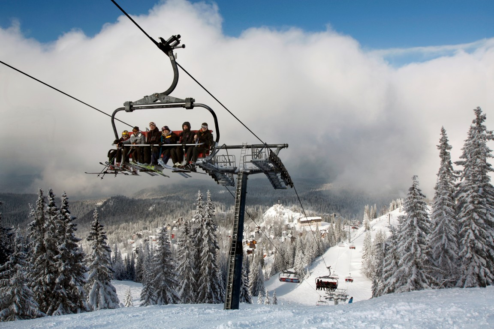

ЗИМСКА ПОНУДА

СКИЈАЊЕ НА ЈАХОРИНА
Јахорина, Босна и Херцеговина
15.01 - 20.01
Откријте ја зимската убавина на Јахорина, една од најпознатите скијачки дестинации во Босна и Херцеговина. Уживајте во снежните планини, одличните скијачки патеки и прекрасната планинска атмосфера. Идеална понуда за краток зимски одмор исполнет со скијање, забава и незаборавни моменти.
ЗИМСКА АВАНТУРА
Еден од најпознатите зимски и планински центри во Босна и Херцеговина, познат по прекрасните снежни пејзажи, чистата планинска природа и пријатната зимска атмосфера. Јахорина нуди одлични услови за зимски активности, одмор и уживање во планинското опкружување, со бројни кафулиња, ресторани и планински објекти.
Популарен зимски центар со модерни жичари и уредени скијачки патеки, погодни за скијачи и сноубордери со различно ниво на искуство. Посетителите можат да уживаат во скијање, сноуборд и прекрасната снежна атмосфера, додека оние кои не скијаат можат да уживаат во зимски прошетки и планинските објекти.
Состанок со групата на автобуска станица во Скопје, 30 минути пред поаѓање. Поаѓање со организиран автобуски превоз кон Сараево. Потоа следи организиран автобуски превоз до хотелот во Јахорина. По пристигнувањето следуваат сместување во хотел и време за одмор. Во попладневните часови е предвидена прва прошетка низ туристичкиот центар, запознавање со околината и уживање во снежната планинска атмосфера. Вечерта е слободна за вечера и индивидуални активности. Ноќевање во хотел.
Појадок во хотелот и слободно претпладне за прошетка и запознавање со туристичкиот центар на Јахорина. Следува време за кафе, фотографирање и уживање во снежните планински предели. Во попладневните часови е предвидено слободно време за индивидуални зимски активности, одмор или подготовка за скијање. Вечерта е слободна за вечера и уживање во атмосферата на планинското одморалиште. Ноќевање во хотел.
Појадок и заминување кон скијачките патеки. Денот е посветен на скијање и сноуборд во скијачкиот центар Јахорина, со можност за изнајмување опрема и користење на уредените патеки според нивото и интересот на туристите. За оние кои не скијаат е предвидено слободно време за зимска прошетка, фотографирање, кафе и одмор во планинските објекти. Во попладневните часови следува враќање во хотелот. Вечерта е слободна за вечера и одмор. Ноќевање во хотел.
Појадок во хотелот и време за уживање во снежната природа на Јахорина. Во зависност од временските услови и работата на жичарите, можност за возење со жичара и уживање во панорамските погледи кон околните планински предели. Следува слободно време за фотографирање, зимска прошетка или дополнително скијање. Во попладневните часови е предвидено време за одмор и слободни активности. Вечерта е слободна за последна вечера и уживање во зимската атмосфера. Ноќевање во хотел.
Појадок во хотелот и одјавување согласно предвиденото време. Следува кратка утринска прошетка и слободно време за последно кафе, фотографии и уживање во планинската атмосфера. Потоа следува собирање на групата и организирано поаѓање кон автобуската станица. По пристигнувањето на автобуската станица следува завршување на потребните процедури и поаѓање кон Скопје. По пристигнувањето и преземањето на багажот завршува организираното патување.